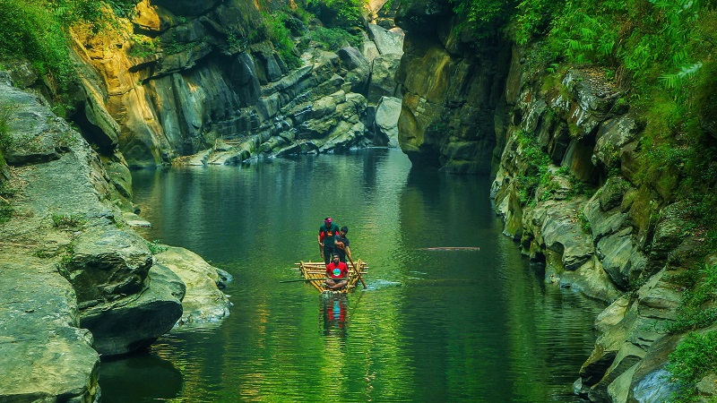
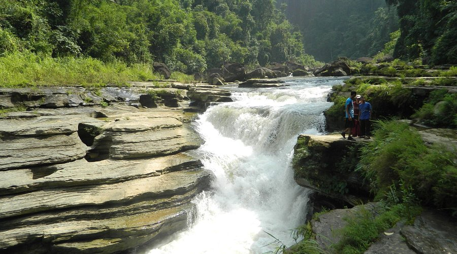

バンダルバンについて
バンダルバン（Bandarban）は、バングラデシュ南東部のチッタゴン丘陵地帯にある山岳地域です。美しい山々、滝、そして多様な先住民族の文化で知られています。
有名な観光地
ボガ湖（Bandarban Morning）

神秘的な山の湖で、その美しい青緑色の水が特徴です。トレッキングの人気スポット。
ナファクム滝（Amiakhum Waterfall area）
バンドルバンの神秘的な峡谷を流れる静かな川は、竹いかだで探検する冒険心をくすぐる絶景の場所です。
キョクリョン（Sangu River）
バンドルバンを流れるサンゴ川は、雄大な緑の峡谷を抜け、美しい景観と静かなボート遊びを楽しめる自然の楽園です。
アミアクム（Amiakhum）
美しい三段の滝で、トレッキングをして訪れる価値のある場所です。
チンブック（Nilgiri Hill）

バンドルバンのニルギリ丘は、雲の上に広がる絶景と静かな自然が楽しめる「天空の楽園」です。